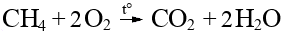
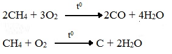

Алканы — углеводороды, в молекулах которых атомы связаны одинарными связями и которые соответствуют общей формуле:
Имеют sp3 гибридизацию.
Угол между атомами C и H – 109°28'.
CH4 — метан
C2H6 — этан
C3H8 — пропан
При присутствии радикалов нумерация атомов C начинается с ближнего к ним края.
2CH3-CH2-Br + 2Na —> CH3-CH2-CH2-CH3 + 2NaBr
При избытке галогена продолжают замещаться атомы водорода
Горение:

при недостатке O2:
